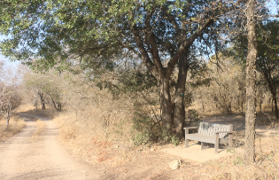

Afrikaans
Marlothii Conservancy
Self-Guided
Tree Walk
Marlothii Bewarea
Self-Begeleide
Boomwandeling Roete
We thank the following individuals and businesses who have sponsored this Self-Guided Tree Walk or Drive:
- Nico and Jasmyn De Bruyn - De Bruine Huis.
- Matilda Bester – Meerkatgat
- Self-Catering Cottage
- Derrick and Sanet Bruins-Lich

Marlothii Conservancy works to protect and enhance the environment of Marloth Park so that residents and visitors may enjoy its beauty and wildlife in a natural bush setting.
We do this by:
- Removing alien plants.
- Protecting and revegetating degraded areas of veldt.
- Providing a tree tagging service.
- Maintaining the giraffe’s favourite waterhole at Gruispan.
- Holding a monthly Ecology and Bird walk every third Saturday of the month at Henk Van Rooyen Park.
- Educating people on aspects of Marloth Park’s ecology.
If you would like to support us, please donate to:
Bank: First National Bank
Account no: 62080272653
Branch code: 270952
Reference: Your Surname and 'tree project'
Ons bedank die volgende individue of besighede wat hierdie Self-Begeleide Boomwandeling geborg het:
- Nico and Jasmyn De Bruyn - De Bruine Huis.
- Matilda Bester – Meerkatgat
- Self-Catering Cottage
- Derrick and Sanet Bruins-Lich
Marlothii Bewarea beywer hulle daarvoor om die omgewing van Marlothpark te beskerm en te verbeter, sodat inwoners en besoekers die skoonheid en wildlewe in ‘n natuurlike bos kan geniet.
Ons doen dit deur:
- Verwydering van indringerplante.
- Beskerming en hervestiging van ontaarde veldareas.
- Voorsiening van ‘n boommerkdiens.
- Instandhouding van die kameelperde se gunsteling watergat by Gruispan.
- Hou maandeliks, elke derde Saterdag van die maand ‘n Omgewings- en Voel kyk uitstappie te Henk van Rooyenpark.
- Lig mense in oor aspekte van Marloth Park se ekologie.
Indien u ons wil ondersteun, skenk asseblief aan:
First National Bank, Komatiepoort
Rekening Nr. 62080272653
Bankkode : 270952
Verwysing : U van en “Boom Projek”.
Loop 1
Seekoei St. to Buffel St
Start at the eastern end.
Distance: Approximately 750m.
Time Required: Leisurely 1hr walking.
Omloop 1
Seekoeistraat tot Buffelstraat.
Begin by oostelike kant.
Afstand: Ongeveer 750m.
Tyd vereis: ‘n Gemaklike 1 uur wandeling

Dankie dat u Marlothpark besoek het en deelgeneem het aan die Self-Begeleide Boomwandeling of -rit.
Indien u meer inligting benodig , kontak asseblief Marlothii Bewarea:
E-Pos: marlothiiconservancy@gmail.com
Volg ons op Facebook
Onthou
Bevolking klein...

Of groot...

Ons is lief vir almal!

Ry stadig.
Die diere kry voorkeur op die paaie.
Geniet die dag.
Thank you for visiting Marloth Park and participating in our Self-Guided Tree Walk or Drive.
If you require further information, please contact Marlothii Conservancy:
Email: marlothiiconservancy@gmail.com
Follow us on Facebook.
Remember
Population small...
And tall...
We love them all!
Drive slowly.
Animals have right of way.
Enjoy your day.